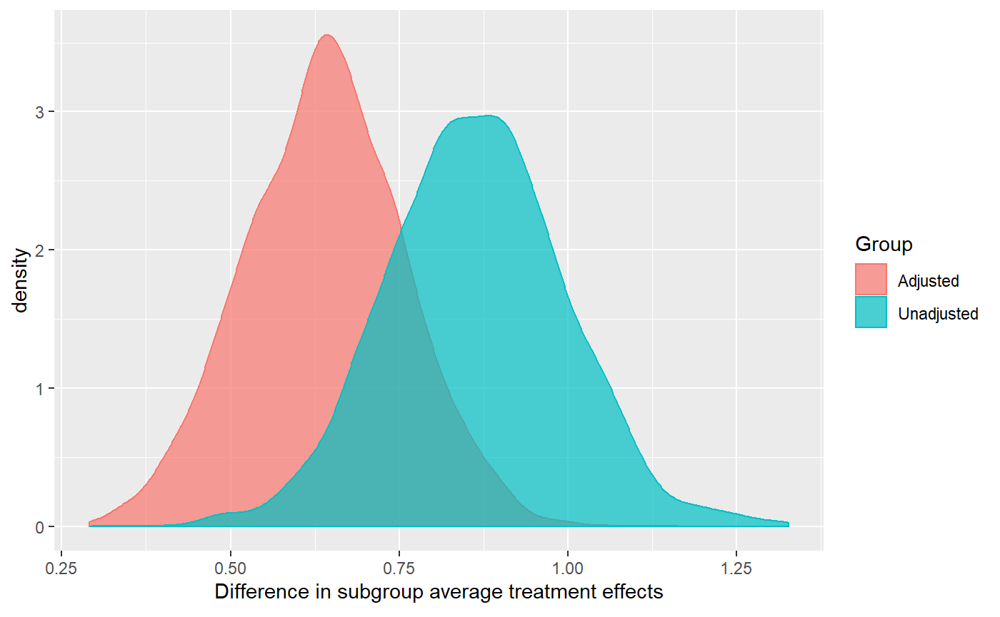

Prediction using BCF
E02_predict-example.RmdIn this vignette, we show how to use the bcf package to fit a model and use the fitted object to predict estimates for new data.
To fit the model to simulated data, we follow the same process as in the “Simple Example” vignette. For that reason, we do not show the data generation and model fitting steps here.
Predicting using BCF
Now we generate a testing dataset with 10 new observations. We make sure to include some values of \(x\) that are outside the range of the \(x\)s in our training dataset, to allow us to gauge out-of-sample error.
set.seed(1)
n_test = 10
x_test <- matrix(rnorm(n_test*(p-1), 0, 2), nrow=n_test) # sd of 2 makes x_test more dispersed than x
x_test <- cbind(x_test, x_test[,2] + rnorm(n_test))
mu_pred <- -1*(x_test[,1]>(x_test[,2])) + 1*(x_test[,1]<(x_test[,2])) - 0.1
pi_pred <- pnorm(mu_pred)
z_pred <- rbinom(n_test,1, pi_pred)We now predict \(y\) and \(\tau\) for these new observations based on our fitted model.
Comparison
Let’s compare the results for our training and testing data. We will show the estimated treatment effects for training and test observations as a function of \(x_3\), which is an effect modifier.
tau_ests_preds <- data.frame(x = c(x[,3], x_test[,3]),
Mean = c(colMeans(bcf_out$tau),
colMeans(pred_out$tau)),
Low95 = c(apply(bcf_out$tau, 2, quantile, 0.025),
apply(pred_out$tau, 2, quantile, 0.025)),
Up95 = c(apply(bcf_out$tau, 2, quantile, 0.975),
apply(pred_out$tau, 2, quantile, 0.975)),
group = factor(c(rep("training", n), rep("testing", n_test))),
agroup = c(rep(0.2, n), rep(1, n_test)))
ggplot(tau_ests_preds, aes(x, Mean, color = group)) +
geom_pointrange(aes(ymin = Low95, ymax = Up95), alpha = tau_ests_preds$agroup) +
xlab(TeX("$x_3$")) +
ylab(TeX("$\\hat{\\tau}$")) 
The estimates for testing observations have treatment effect estimates well within the range of the treatment effect estimates for training observations, even though the test data set contains more extreme values of \(x_3\). It is reassuring that these observations’ treatment effect estimates still fall within the expected range, suggesting that this model is not overly vulnerable to out-of-sample prediction error.
Adjusted subgroup effects
We can also use predict() to compute adjusted subgroup treatment effects, in other words the effect of a given covariate averaged across the levels of all other covariates. For context, this is analogous to an estimate from a standard parametric regression in which we calculate the effect of a given covariate holding the values of all other covariates constant. These are also known as mean marginal effects.
For example, consider the subgroups discussed in the “Simple Example” vignette, namely the bottom and top quartiles of \(x_3\). There are two approaches we could take to estimating the difference in treatment effects between these two subgroups:
We could compare the unadjusted subgroup average treatment effects. These are the subgroup treatment effects we calculated in the “Simple Example.” They do not hold \(x_1\) and \(x_2\) constant. To be concrete, in our example this means that – since \(x_2\) and \(x_3\) happen to be positively correlated – this estimate will reflect that \(x_2\) values are higher for units in the top quartile of \(x_3\) than for those in the bottom quartile of \(x_3\).
We could compare the adjusted subgroup average treatment effects, or mean marginal effects, by marginalizing over \(x_1\) and \(x_2\). This estimate will hold \(x_1\) and \(x_2\) constant while comparing treatment effects for units in the top and bottom quartiles of \(x_3\).
Because the computational intensity of the marginal effects calculation depends on the number of unique values of \(x_3\) in the sample, we focus on just the first 20 observations in the training dataset, to speed up the calculation.
# subset x, weights, and tau to the first 20 observations
x20 <- x[1:20,]
weights20 <- weights[1:20]
tau20 <- bcf_out$tau[, 1:20]Unadjusted subgroup effects
# create indicators for whether units are in the bottom/top quartile of x3
q1 <- x20[,3] < quantile(x20[,3], 0.25)
q4 <- x20[,3] > quantile(x20[,3], 0.75)
# subset the tau matrix to units in the bottom/top quartile of x3
q1Taus <- tau20[, q1]
q4Taus <- tau20[, q4]
# roll up across units within each subgroup to calculate unadjusted subgroup average treatment effects
# by taking weighted averages
q1avgTau <- apply(q1Taus, 1, weighted.mean, weights20[q1])
q4avgTau <- apply(q4Taus, 1, weighted.mean, weights20[q4])
# calculate the posterior distribution of the difference in unadjusted subgroup average treatment effects
unadjustedDiff <- q4avgTau - q1avgTauAdjusted subgroup effects
For each unit \(j\) in our dataset, for each value of \(x_3\) in the bottom/top quartile, we predict the treatment effect holding the \(x_1\) and \(x_2\) fixed at unit \(j\)’s observed values of \(x_1\) and \(x_2\). The difference between those two means is the difference in subgroup impacts for unit \(j\). After repeating this calculation for each unit in the dataset, we take a weighted average across all units in the dataset to estimate the difference in adjusted subgroup average treatment effects.
# # create placeholder values for pi and z.
# # note that the values of these placeholders don't matter, since tau doesn't depend on pi or z
# piPred <- rep(.5, 20/4) # each quartile has 1/4th of the total of 20 units in it
# zPred <- rep_len(0:1, length.out=20/4)
#
# #create an empty object to hold the components of the mean marginal effect
# adjustedDiffs <- matrix(NA, nrow(bcf_out$tau), 20)
#
# # for each person j in the dataset
# for (j in 1:20){
# print(j)
# # for each value of x3 in the bottom quartile of x3
# xPredQ1 <- x20[q1,]
# # and for each value of x3 in the top quartile of x3
# xPredQ4 <- x20[q4,]
# # hold the values of x1 and x2 fixed at person j's actual values of x1 and x2
# xPredQ1[,1] <- x20[j,1]
# xPredQ4[,1] <- x20[j,1]
# xPredQ1[,2] <- x20[j,2]
# xPredQ4[,2] <- x20[j,2]
# # predict the treatment effect for each simulated unit
# tauPredQ1 = predict(object = bcf_out,
# x_predict_control = xPredQ1,
# x_predict_moderate = xPredQ1,
# pi_pred = piPred,
# z_pred = zPred,
# save_tree_directory = '..')$tau
# tauPredQ4 = predict(object = bcf_out,
# x_predict_control = xPredQ4,
# x_predict_moderate = xPredQ4,
# pi_pred = piPred,
# z_pred = zPred,
# save_tree_directory = '..')$tau
# # roll up across the possible values of x3
# q1avgTau <- apply(tauPredQ1, 1, mean)
# q4avgTau <- apply(tauPredQ4, 1, mean)
# # calculate person j's difference in subgroup average treatment effects
# adjustedDiffs[,j] <- q4avgTau - q1avgTau
# }
# # roll up across units to by taking weighted averages
# adjustedDiff <- apply(adjustedDiffs, 1, weighted.mean, weights20)
# the following code arrives at the same answer as the code above that is commented out.
# it is more opaque, but much quicker, so we've included both for reference.
whichX1X2 <- 1:20
whichX3 <- which(q1 | q4)
whichXs <- expand.grid(whichX1X2, whichX3)
xPred <- cbind(x20[whichXs[,1], 1:2], x20[whichXs[,2], 3])
piPred <- rep(.5, nrow(xPred))
zPred <- rep_len(0:1, length.out=nrow(xPred))
tauPred = predict(object = bcf_out,
x_predict_control = xPred,
x_predict_moderate = xPred,
pi_pred = piPred,
z_pred = zPred,
save_tree_directory = '..')$tau
#> Initializing BCF Prediction
#> Starting Prediction
wPreds <- weights20[whichXs[,1]]
q1Preds <- whichXs[,2] %in% which(q1)
q4Preds <- whichXs[,2] %in% which(q4)
q1avgTau <- apply(tauPred[,q1Preds], 1, weighted.mean, wPreds[q1Preds])
q4avgTau <- apply(tauPred[,q4Preds], 1, weighted.mean, wPreds[q4Preds])
adjustedDiff <- q4avgTau - q1avgTauComparison
We compare the posterior distributions of the unadjusted and adjusted estimates of the difference in subgroups average treatment effects.
diffDF <- data.frame(diffs = c(unadjustedDiff, adjustedDiff),
Group = c(rep("Unadjusted", length(unadjustedDiff)),
rep("Adjusted", length(adjustedDiff))))
ggplot(diffDF, aes(diffs, group = Group, color = Group, fill = Group)) +
geom_density(alpha = 0.7) +
xlab(TeX("Difference in subgroup average treatment effects"))
The two approaches (adjusted and unadjusted) produce slightly different results in estimating the difference in impacts between the first and fourth quartiles of \(x_3\): the adjusted difference is smaller, though not by a statistically meaningful amount. Nevertheless, the figure above implies that part of what we called a difference in impacts between the top and bottom quartiles in the “Simple Example” vignette was a difference in the distributions of \(x_1\) and \(x_2\) between those two quartiles.